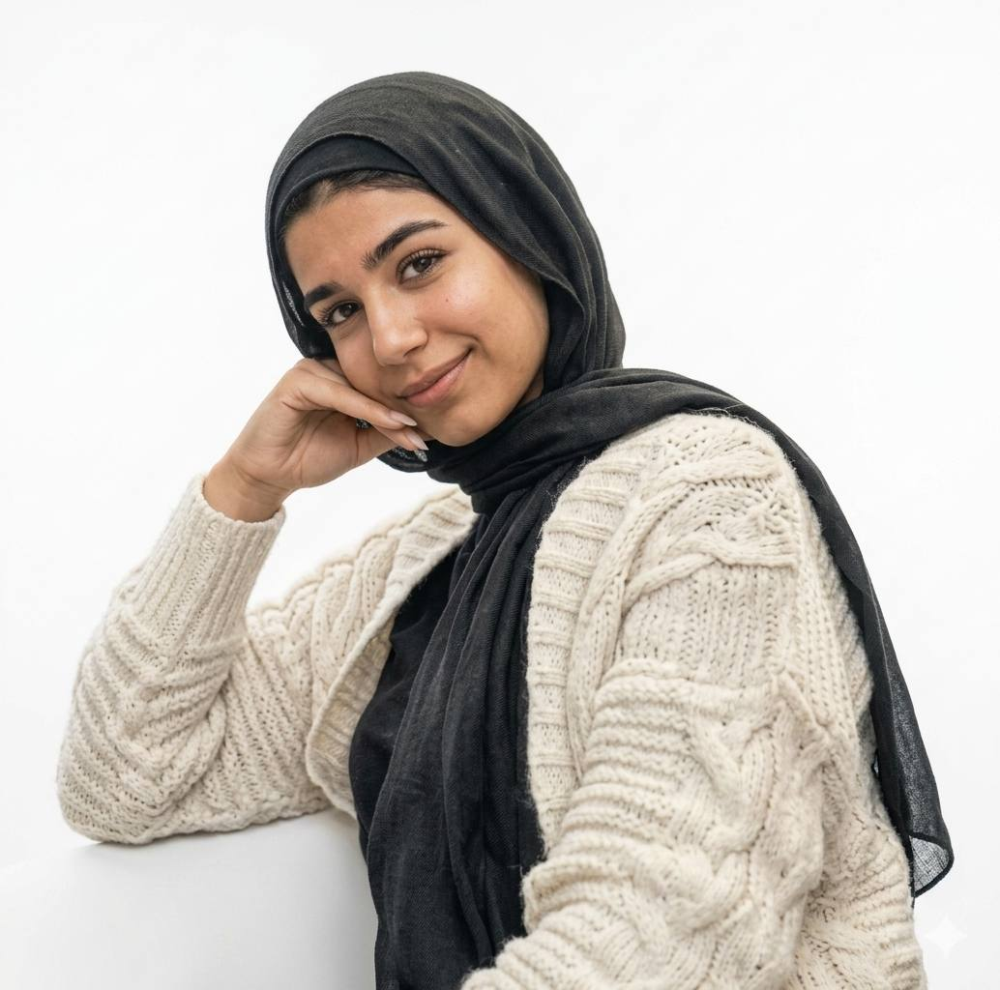
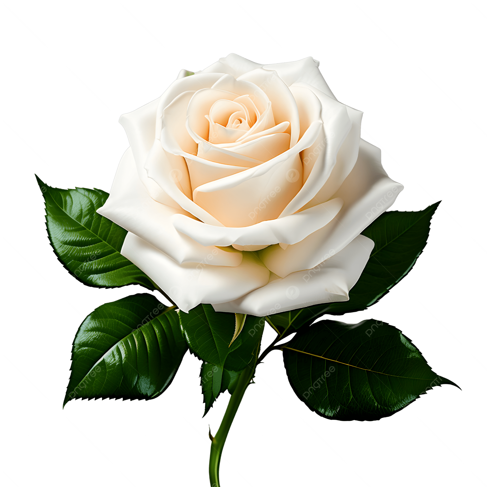

🔬 تحليل البشرة الدافئة
- اللون والنوع: حنطية فاتحة (Light Wheatish) ذات أندرتون ذهبي دافئ.
- المميزات: نضرة عالية، مخملية الملمس، وتعكس الضوء بنعومة فائقة.
👁️ هندسة العينين
- الشكل: لوزية كلاسيكية (Almond) ذات اتساع محدد.
- اللون: بني داكن عميق (Espresso).
- المميزات: حواجب طبيعية مقوسة بكثافة تعزز من جاذبية النظرة الهادئة.


النبات الشبيه: الوردة البيضاء النادرة
🦌 رمزية المها العربي
- التشبيه: تطابق 95% مع اتساع عيون المها (الغزال العربي).
- المميزات: نظرة تجمع بين الرقة الفطرية والقوة الكامنة، وحضور ملكي هادئ.
🌟 أشباه المشاهير
بناءً على تناسق الملامح ورسمة العين:
مايان السيد
نادين نجيم (العيون)
هنا الزاهد (الملامح)
🏛️ 9 ملاحظات علمية دقيقة
- 1. بنية الوجه القلبية: تعطي انطباعاً دائماً بالشباب والبراءة.
- 2. المسافة البيومترية: تناسق مثالي بين العينين والحاجبين.
- 3. الانعكاس اللوني: البشرة تمتص الضوء وتوزعه بنعومة.
- 4. زاوية العين: ميلان خارجي بسيط يزيد من جاذبية النظرة.
- 5. النسبة الذهبية: تطابق عالٍ في أبعاد الجبهة والذقن.
- 6. خط الحواجب: كثافة طبيعية تتبع الانحناء التشريحي للعظمة.
- 7. الوضوح التعبيري: ملامح مرنة تعطي تعبيرات قوية بهدوء.
- 8. الشفاه: تناسق مثالي بين الشفة العليا والسفلى.
- 9. الهوية البصرية: ملامح شرقية أصيلة بنسبة 100%.
🕊️ الوصف العام المميز
"جمال استثنائي يجمع بين وقار التاريخ ونعومة الحاضر. الوردة البيضاء في سكونها، والمها في نظرتها. ملامح لا تحتاج لتعريف، بل تفرض حضورها بهدوء وذكاء، كأنها لوحة رسمت بعناية فائقة لتكون أيقونة للرقة العربية الأصيلة."